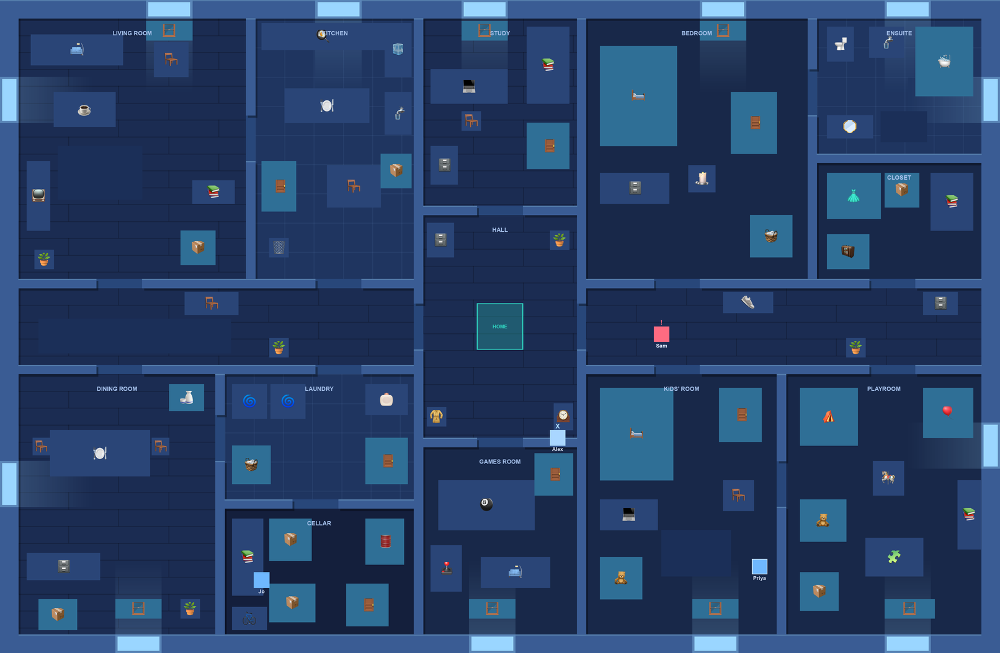

Hide and Go Seek
One seeker counts to twenty with their eyes shut. Everybody else has that long to get across the house and find a wardrobe.
Not running right now
The game needs a live server, so it is not always up. You can always run it yourself — see below.

How it goes
- Everyone starts on the home base in the middle of the house.
- One player is the seeker. Their screen goes black and they count to twenty.
- Everybody else scatters. Hide near the base and you get moved out — that is not hiding.
- Tuck into a wardrobe, a bathtub, the curtains, under a bed. The seeker has to walk up and search it to find you.
- Get tagged and you freeze where you stand. A hider who is still free can stand with you and thaw you out. Somebody who already made it home cannot — so a rescue always costs somebody their safety.
- Hiders win by getting every one of themselves back onto the base. The seeker wins by freezing everyone.
Run it yourself
Everyone on the same Wi-Fi. They open your computer's address and join with a four-digit code.
git clone https://github.com/faarisaahmed/hide-and-go-seek
cd hide-and-go-seek/backend
pip install -r requirements.txt
python app.py
For friends who are somewhere else entirely,
./scripts/share.sh opens a public tunnel and prints an
address anyone can open.